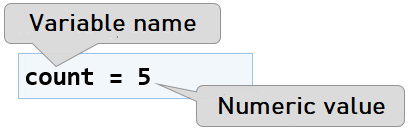
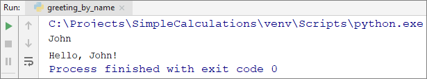

Chapter 2.1. Simple Calculations
In this chapter we are going to become familiar with the following concepts and programming techniques:
- How to work with data types and variables, which are necessary when processing numbers and strings.
- How to print a result on the console.
- How to read user input.
- How to do simple arithmetic operations: addition, subtraction, multiplication, division, string concatenation.
- How to round numbers.
Video
Calculations in Programming
We know that computers are machines that process data. All data is held in the computer memory (RAM memory) as variables. Variables are named areas of the computer memory which hold data of a certain type, for example a number or text. Each variable in Python has a name and value. Here is how to define a variable, assigning a value to it at the time of declaration:

After processing, data is still held in variables (i.e. somewhere in the computer memory, allocated by our program).
Data Types and Variables
In programming, each variable stores a certain value of a particular type. For example, data types can be: number, letter, text (string), date, color, image, list and others. Here are some examples of data types and their values:
- int - integer: 1, 2, 3, 4, 5, ...
- float - floating-point number: 0.5, 3.14, -1.5, ...
- str - text (string) of symbols: 'a', 'Hello', 'Hi', 'Beer', ...
- datetime - date: 21-12-2017, 25/07/1995, ...
In Python, the data type is defined by the value that is assigned and is not explicitly specified when declaring variables (as opposed to C#, Java and C++).
Printing Results on the Screen
In order to print text, numbers or other result on the screen, we need to call the built-in function print(). It allows us to print the value of a variable as well as to directly print a string or a number:
print(9) # prints a number
print('Hello!') # prints text
msg = 'Hello, Python!'
print(msg) # prints value of a variable
Reading User Input in Integer Type
To read a user input as an integer, it is necessary to declare a variable and use the built-in functions input (…) to read a text line from the console and int (…) to convert a text value to numerical:
num = int(input())
If it weren't for this conversion, for the program every number will be just text with which we wouldn't be able to do arithmetic operations. When using input(…) we can include a prompt to the user to tell them what we want them to enter, for example:
size = int(input('Enter the size = '))
Example: Calculating a Square Area with Length of a Side a
Let's take the following program as an example. It reads an integer, multiplies it by itself (i.e. squares it) and prints the result of the multiplication. This is how we can calculate the area of a square by using a given length of its side a:
a = int(input('a = '))
area = a * a
print('Square area = ', area)
Here is how the program would work for a square with a side equal to 3:

Try to type in an invalid number, for example "hello". You will receive an error message during execution of the program (exception). This is normal. We will find out later how we can catch such errors and make the user re-enter a number.
How does the example work?
The first line a = int(input('a = ')) prints a message which tells the user to input the side of the square a, then it reads a text (string) and converts it into an integer (this is called parsing) utilizing the function int(…). The result is assigned to a variable with the name a.
The next command area = a * a assigns to a new variable area the result of the multiplication of a by a.
The last line print('Square area = ', area) prints the given text and next to it, the calculated area of the square, held in the variable area is concatenated.
Testing in the Judge System
Test your solution here: https://judge.softuni.org/Contests/Practice/Index/1047#0.
Reading a Sequence of Numbers
When we want to read several numbers from the console, if they are given each on a new line, we read them sequentially like this:
num1 = input()
num2 = input()
num3 = input()
print(num1, num2, num3)
If we type in the following input:
10
20
30
we will receive the following result:
10 20 30
When we want to read several numbers from the console and they are given together on the same line, separated by an interval, we can use the following construction:
num1, num2, num3 = map(int, input().split())
print(num1 + num2 + num3)
If we type in the following input:
100 200 300
we will receive the following result:
600
How does the code mentioned above work? By using .split(…) we separate the elements from the given text line by the interval separator. If we type in the input from above, we will receive 3 elements: '100', '200', and '300'. After that, utilizing the function map(int, elements) we convert the sequence of elements from text to numbers.
Reading Floating Point Numbers
To read a user input as a floating-point number, we need to declare a variable, this time using the function float(…) which converts the given text value to a fractional number:
num = float(input())
Example: Conversion of Inches to Centimeters
Let's write a program that reads a fractional number in inches and converts it to centimeters:
inches = float(input('Inches = '))
centimeters = inches * 2.54
print('Centimeters = ', centimeters)
Let's start the program and make sure that when we input a value in inches, we receive a correct result in centimeters:

Testing in the Judge System
Test your solution here: https://judge.softuni.org/Contests/Practice/Index/1047#1.
Reading a Text from the Console
To read a text (string) from the console, again, we have to declare a new variable and use the standard command for reading a text from the console:
str = input()
Example: Greeting by Name
Let's write a program that asks the user for their name and salutes them with the text "Hello, {name}!".
name = input()
print('Hello, ', end='')
print(name, end='!')
By default, the built-in function print(…) prints the result and continues to the next line. This is because print(…) uses the parameter end, which by default has a value \n (new line). In order to stay on the same line, we can change the value of end=''.
Here is the result if we call the function with the name "Ivan":

Testing in the Judge System
Test your solution here: https://judge.softuni.org/Contests/Practice/Index/1047#2.
Concatenating Text and Numbers
When printing text, numbers and other data, we can concatenate them by using templates {0}, {1}, {2} etc. In programming these templates are called placeholders.
In Python we use the built-in method .format(…), through which we list the variables we want to put in place of the templates (placeholders). Example: we type in first name and last name of a student as well as their age and hometown and we print text in the format “You are {name} {family name}, a {age}-year-old person from {hometown}.”. The following is a solution with text templates:
first_name = input()
last_name = input()
age = int(input())
town = input()
print('You are {0} {1}, a {2}-year-old person from {3}.'
.format(first_name, last_name, age, town))
Here is the result which we will get after execution of this example:

Note how each variable must be passed in the order, in which we want it to print. Essentially, the template (placeholder) accepts all types of variables and this creates great convenience when printing.
Testing in the Judge System
Test your solution here: https://judge.softuni.org/Contests/Practice/Index/1047#3.
More on Printing Formatted Text
It is possible for one number of a template to be used several times and it is not required for the templates of the function .format(…) to be numbered consecutively. Here is an example:
print('{1} + {1} = {0}'.format(1+1, 1))
The result is:
1 + 1 = 2
Arithmetic Operations
Let's examine the basic arithmetic operations in programming.
Summing Numbers: Operator +
We can sum numbers by using the + operator:
a = 5
b = 7
sum = a + b # the result is 12
Subtracting Numbers: Operator -
Subtracting numbers is done with the - operator:
a = int(input())
b = int(input())
result = a - b
print(result)
Here is the result of the execution of this program (with numbers 10 and 3):

Multiplying Numbers: Operator *
For multiplication of numbers we use the * operator:
a = 5
b = 7
product = a * b # 35
Dividing Numbers: Operator /
Dividing numbers is done with the / operator.
Note: Dividing by 0 causes an error during execution (runtime exception) - ZeroDivisionError.
Here are a few examples with the division operator:
print(10 / 2.5) # Result: 4
print(10 / 4) # Result: 2.5
print(10 / 6) # Result: 1.6666666666666667
print(5 / 0) # Result: ZeroDivisionError: division by zero
print(-5 / 0) # Result: ZeroDivisionError: division by zero
print(0 / 0) # Result: ZeroDivisionError: division by zero
print(2.5 / 0) # Result: ZeroDivisionError: float division by zero
Raising to a Power: Operator ``**
To raise to power in Python the operator ** is used:
print(2 ** 10) # 1024
print(2 ** 20) # 1048576
print(2 ** 30) # 1073741824
print(2 ** 64) # 18446744073709551616
print(2 ** 128) # 340282366920938463463374607431768211456
print(2.5 ** 1.5) # 3.952847075210474
As seen in the example, Python works efficiently with big integer values, without special requirements. Here is a bigger example:
print(2 ** 1024)
The result is the following big integer:
179769313486231590772930519078902473361797697894230657273430081157732675805500963132708477322407536021120113879871393357658789768814416622492847430639474124377767893424865485276302219601246094119453082952085005768838150682342462881473913110540827237163350510684586298239947245938479716304835356329624224137216
Concatenating Text and Numbers
Besides for summing numbers, the operator + is also used for joining pieces of text (concatenation of two strings one after another). In programming, joining two pieces of text is called "concatenation". Here is how we can concatenate a text with a number using the + operator:
first_name = 'Maria'
last_name = 'Ivanova'
age = 19
str = first_name + ' ' + last_name + ' @ ' + str(age)
print(str) # Maria Ivanova @ 19
In Python, we cannot directly concatenate a number to a given text, so we first parse the number to text utilizing the str (…) function.
Here is another example:
a = 1.5
b = 2.5
sum = 'The sum is: ' + str(a) + str(b)
print(sum) # The sum is 1.52.5
Did you notice something strange? Maybe you expected the numbers a and b to be summed? Actually, the concatenation works from left to right and the result above is absolutely correct. If we want to sum the numbers, we have to use brackets, in order to change the order of execution of the operations:
a = 1.5
b = 2.5
sum = 'The sum is: ' + str(int(a + b))
print(sum) # The sum is: 4
Repeating Text: Operator *
The operator * can be used to repeat a given text a number of times:
text = 'hi'
print(3 * text) # hihihi
This feature of the operator for multiplication can lead to the following wrong result if we don't keep in mind our value type:
count = input() # Enter 20
print(5 * count) # 2020202020, not 100
If we want to multiply a number read from the console by 5, we first have to convert it to an integer using the function int():
count = int(input()) # Enter 20
print(5 * count) # 100
Printing Formatted Text in Python
In Python there are several ways to print formatted text, i.e. text, combined with numbers, values of variables and expressions. We have already encountered some of them, but let's look at the issue in more detail.
Printing with Commas
When printing using print(…) we can list multiple values with commas:
width = 5
height = 7
print('width =', width, '; height =', height, '; area =', width * height)
The result is the following:
width = 5 ; height = 7 ; area = 35
As you can see from the example, in such printing every two values of the listed are separated by an interval.
Concatenating text with the operator +
We already know how to concatenate text and numbers with the operator +. Using +, the example above can be written in the following way:
width = 5
height = 7
print('width = ' + str(width) + ' ; height = ' + str(height) + ' ; area = ' + str(width * height))
The result is the same as in the last example:
width = 5 ; height = 7 ; area = 35
Because in Python text cannot be directly concatenated with numbers, they first have to be parsed to text using the function str(num).
Formatting strings %d, %s, %f
Printing with templates can be done with formatting strings (also used in C and Java). Here is an example:
width = 5
height = 7
text = "area"
print('width = %d ; height = %d ; %s = %d' % (width, height, text, width * height))
In the example above we use the operator %, which substitutes values in a text template, given as a sequence of elements in brackets. The following main placeholders are used (formatting strings): %d signifies an integer, %f signifies a floating-point number, %s signifies text. The outcome of the code above is the same as in the last examples:
width = 5 ; height = 7 ; area = 35
Using a wrong formatting string could result in an error.
When formatting floating point numbers, we can round them to a specified number of digits after the decimal point, for example with the formatting string %.2f we can print a floating point number rounded to 2 digits after the decimal point:
print('price = %.2f \nVAT = %.3f' % (1.60, 1.60 * 0.2))
The result from the code above is the following:
price = 1.60
VAT = 0.320
In the example above we use the special symbol \n, which means „go to the next line“. Analogically, the special symbol \b returns the cursor with one position backwards (deletes the last printed symbol), respectively the following code:
print('ab\bc')
prints the following result:
ac
Formatting using .format(…)
We already looked at how we can format text and numbers using .format(…) and numbered templates {0}, {1}, {2} etc. Actually, when enumeration is not necessary, we can use just {}, to create a placeholder. Here is an example of how we can use formatting with text.format(…) in order to print the result from the last example:
width = 5
height = 7
print('width = {} ; height = {} ; area = {}'.format(width, height, width * height))
The result is the same again:
width = 5 ; height = 7 ; area = 35
Formatting Using f-string
Maybe the easieast, the most intuitive and the shortest way to format text and numbers in Python is to use the f-string syntax:
width = 5
height = 7
print(f'width = {width} ; height = {height} ; area = {width * height}')
Using the f-string formatting is very easy: we put a prefix f in front of the string and insert values of variables and expressions in curly braces {expression} in random positions. In the example above we have three expressions: {width}, {height} and {width * height} which are calculated and are substituted by their text value. We can use text expressions, integer expressions, floating point expressions and all other kinds of expressions.
Formatting with f-string in Python is the recommedned method for printing formatted text because it uses the shortest syntax and the code is easily read and understood.
Numerical Expressions
In programming, we can calculate numerical expressions, for example:
expr = (3 + 5) * (4 – 2) # 16
The standard rule for priorities of arithmetic operations is applied: multiplication and division are always done before addition and subtraction. In case of an expression in brackets, it is calculated first, but we already know all of that from school math.
Example: Calculating Trapezoid Area
Let's write a program that inputs the lengths of the two bases of a trapezoid and its height (one floating point number per line) and calculates the area of the trapezoid by the standard math formula:
b1 = float(input())
b2 = float(input())
h = float(input())
area = (b1 + b2) * h / 2
print('Trapezoid area = ' + str(area))
Because we want the program to work for both integer and floating-point numbers, we use float(…). If we start the program and we input for the sides respectively 3, 4 and 5, we will get the following result:

Testing in the Judge System
Test your solution here: https://judge.softuni.org/Contests/Practice/Index/1047#4.
Rounding of Numbers
Sometimes when we work with floating point numbers we need to convert the numbers to the same type of format. This conversion is called rounding. Python offers several methods for rounding of numbers:
math.ceil(…)- rounding up, to the next (bigger) integer number:
up = math.ceil(23.45) # up = 24
math.floor(…)- rounding down, to the previous (smaller) integer number:
down = math.floor(45.67) # down = 45
round(…)- rounding is done following the basic rule for rounding - if the decimal part is less than 5, the rounding is down and vice versa, if it is greater than 5 - up:
round(5.439) # 5
round(5.539) # 6
round(…, [number of symbols after the decimal point])- rounding to the closest number with a specified number of symbols after the decimal point:
round(123.456, 2) # 123.46
round(123, 2) # 123.0
round(123.456, 0) # 123.0
round(123.512, 0) # 124.0
Example: Perimeter and area of a circle:
Let's write a program that, when given the radius r of a circle, calculates the area and the perimeter of the circle.
Formulas:
- Area = π * r * r
- Perimeter = 2 * π * r
- π ≈ 3.14159265358979323846…
import math
r = float(input('Enter circle radius => r = '))
area = math.pi * r * r
perimeter = 2 * math.pi * r
print('Area = ', area)
print('Perimeter = ', perimeter)
Let's try the program with radius r = 10:

Testing in the Judge System
Test your solution here: https://judge.softuni.org/Contests/Practice/Index/1047#5.
Example: Area of a Rectangle
A rectangle is given with coordinates of its two opposite corners. You have to calculate its area and perimeter:

For this exercise, we have to take into consideration that by subtracting the smaller x from the bigger x we can get the long side of the rectangle. Analogically, by subtracting the smaller y from the bigger y, we can get the height of the rectangle. Finally, we have to multiply them. Here is an example implementation of the described logic:
x1 = float(input())
y1 = float(input())
x2 = float(input())
y2 = float(input())
width = max(x1, x2) - min(x1, x2)
height = max(y1, y2) - min(y1, y2)
area = width * height
perimeter = 2 * (width + height)
print('Area = ', area)
print('Perimeter = ', perimeter)
The function max(a, b) is used to find the bigger value between a and b and analogically min(a, b) - to find the smaller value between the two.
When starting the program with the values from the coordinate system, the following result is given:

Testing in the Judge System
Test your solution here: https://judge.softuni.org/Contests/Practice/Index/1047#6.
What have we learned in this chapter?
Let's summarize what we have learned in this chapter:
- Reading text:
str = input(). - Reading an integer:
num = int(input()). - Reading a floating point number:
num = float(input()). - Calculations with numbers and using the suitable arithmetic operators [+, -, *, /, ()]:
sum = 5 + 3. - Printing a text by placeholders on the console:
print('{0} + {1} = {2}'.format(3, 5, 3 + 5)).
Exercises: Simple Calculations
Let's strengthen the knowledge gained throughout this chapter with a few more exercises.
Creating a New Project in PyCharm
We have to create a new project in PyCharm (from [Create New Project] or [File] -> [New Project]) in order to better organize our problems for exercise. The idea of this project is for it to contain one Python file for each problem of the exercises:
- We start PyCharm.
- We create a new project: [Create New Project] (or [File] -> [New Project]).

Problem: Calculating Square Area
The first exercise from this topic is the following: write a console program that inputs an integer a and calculates the area of a square with side a. The task is trivial and easy: input a number from the console, multiply it by itself and print the obtained result on the console.
Hints and Guidelines
We create a new file in the existing PyCharm project. Right-click on SimpleCalculations and choose [New] -> [Python File]:

A dialog box will open letting us choose a name for the file. We name it "square_area":

We already have a solution with one console application in it. What remains is to write the code for solving this problem. For this purpose, we go to the file and we write the following code:

The code inputs an integer through a = int(input('a = ')), afterwards it calculates area = a * a and finally prints the value of the variable area. We start the program using [Ctrl + Shift + F10] or with right-click - [Run], and we test it with different inputs:

Testing in the Judge System
Test your solution here: https://judge.softuni.org/Contests/Practice/Index/1047#0. You have to get 100 points (completely correct solution):


Problem: Inches to Centimeters
Write a program that reads a number from the console (not necessarily an integer) and converts the number from inches to centimeters. For the purpose it multiplies the inches by 2.54 (because 1 inch = 2.54 centimeters).
Hints and Guidelines
First, we create a new Python file in the project "SimpleCalculations". We right-click the solution SimpleCalculations and choose [New] -> [Python File]. We name it "inches_to_centimeters":

Next, we have to write the program code:

Start the program with [Ctrl + Shift + F10] or with right-click - [Run]:

Let's test it with floating-point numbers, for example 2.5:

| Depending on the regional settings of the operation system, it is possible instead of using a decimal point (US settings), to use a decimal comma (BG settings). |
If the program expects a decimal point and a decimal comma is entered, or vice versa (a decimal point is entered when a decimal comma is expected), the following error will occur:

It is recommended to change the settings of your computer to use a decimal point: In Windows this can be done from the Control Panel:


Testing in the Judge System
Test your solution here: https://judge.softuni.org/Contests/Practice/Index/1047#1.
The solution should be accepted as a completely correct one:

Problem: Greeting by Name
Write a program that reads a person's name and prints Hello, <name>!, where <name> is the name entered earlier.
Hints and Guidelines
First, we create a new Python file named "greeting_by_name" in the project "SimpleCalculations":

Next, we have to write the code of the program. If you have any difficulties, you can use the code from the example below:

We run the program using [Ctrl + Shift + F10] or with right click - [Run] to test if it runs correctly:

Testing in the Judge System
Test your solution here: https://judge.softuni.org/Contests/Practice/Index/1047#2.
Problem: Concatenating Text and Numbers
Write a program, that reads a first name, last name, age and city from the console and prints a message of the following kind: You are <firstName> <lastName>, a <age>-year-old person from <town>.
Hints and Guidelines
We add to the existing PyCharm project one more Python file named "concatenate_data". We write the code which reads the input from the console:

The code, which prints the message described in the condition of the task, is purposefully blurred and must be added by the reader:

Next, the solution should be tested locally using [Ctrl + Shift + F10] or with right click - [Run] and enter sample input.
Testing in the Judge System
Test your solution here: https://judge.softuni.org/Contests/Practice/Index/1047#3.
Problem: Trapezoid Area
Write a program that reads three numbers from the console b1, b2 and h and calculates the area of a trapezoid with bases b1 and b2 and height h. The formula for trapezoid area is (b1 + b2) * h / 2.
Example Input and Output
| Input | Output |
|---|---|
| 8 13 7 |
73.5 |
| 12 8 5 |
50 |
The figure below shows a trapezoid with bases 8 and 13 and height 7. It has an area (8 + 13) * 7 / 2 = 73.5.

Hints and Guidelines
Again, we have to add to the existing PyCharm project another Python file named "trapezoid_area" and to write the code which reads the input data from the console, calculates the trapezoid area and prints it. The code in the picture is purposely blurred, in order for you to give it a thought and finish it yourself.

Test your solution locally using [Ctrl + Shift + F10] or with right click - [Run] and enter sample input.
Testing in the Judge System
Test your solution here: https://judge.softuni.org/Contests/Practice/Index/1047#4.
Problem: Circle Area and Perimeter
Write a program that reads from the console a number r and calculates and prints the area and perimeter of a circle with radius r.
Example Input and Output
| Input | Output |
|---|---|
| 3 | Area = 28.2743338823081 Perimeter = 18.8495559215388 |
| 4.5 | Area = 63.6172512351933 Perimeter = 28.2743338823081 |
Hints and Guidelines
For the calculations you may use the following formulas:
area = math.pi * r * r.perimeter = 2 * math.pi * r.
Testing in the Judge System
Test your solution here: https://judge.softuni.org/Contests/Practice/Index/1047#5.
Problem: Rectangle Area
A rectangle is defined by the coordinates of both of its opposite corners (x1, y1) – (x2, y2). Calculate its area and perimeter. The input is read from the console. The numbers x1, y1, x2 and y2 are given one per line. The output is printed on the console and it has to contain two lines, each with one number – the area and the perimeter.

Example Input and Output
| Input | Output |
|---|---|
| 60 20 10 50 |
1500 160 |
| 30 40 70 -10 |
2000 180 |
| 600.25 500.75 100.50 -200.5 |
350449.6875 2402 |
Testing in the Judge System
Test your solution here: https://judge.softuni.org/Contests/Practice/Index/1047#6.
Problem: Triangle Area
Write a program that reads from the console a side and a height of a triangle and calculates its area. Use the formula for triangle area: area = a * h / 2. Round the result to 2 digits after the decimal point using round(area, 2).
Example Input and Output
| Input | Output |
|---|---|
| 20 30 |
Triangle area = 300 |
| 15 35 |
Triangle area = 262.5 |
| 7.75 8.45 |
Triangle area = 32.74 |
| 1.23456 4.56789 |
Triangle area = 2.82 |
Testing in the Judge System
Test your solution here: https://judge.softuni.org/Contests/Practice/Index/1047#7.
Problem: Converter – from °C Degrees to °F Degrees
Write a program that reads degrees on Celsius scale (°C) and converts them to degrees on Fahrenheit scale (°F). Look on the Internet for a proper formula to do the calculations. Round the result to 2 digits after the decimal point.
Example Input and Output
| Input | Output |
|---|---|
| 25 | 77 |
| 0 | 32 |
| -5.5 | 22.1 |
| 32.3 | 90.14 |
Testing in the Judge System
Test your solution here: https://judge.softuni.org/Contests/Practice/Index/1047#8.
Problem: Converter – from Radians to Degrees
Write a program, that reads an angle in radians (rad) and converts it to degrees) (deg). Look for a proper formula on the Internet. The number π in Python programs is available through math.pi but before that we have to refer to the math library using import math. Round the result to the nearest integer number using the method round().
Example Input and Output
| Input | Output |
|---|---|
| 3.1416 | 180 |
| 6.2832 | 360 |
| 0.7854 | 45 |
| 0.5236 | 30 |
Testing in the Judge System
Test your solution here: https://judge.softuni.org/Contests/Practice/Index/1047#9.
Problem: Converter – USD to BGN
Write a program for conversion of US dollars (USD) to Bulgarian leva (BGN). Round the result to 2 digits after the decimal point. Use a fixed rate between a dollar (USD) and a lev (BGN): 1 USD = 1.79549 BGN.
Example Input and Output
| Input | Output |
|---|---|
| 20 | 35.91 BGN |
| 100 | 179.55 BGN |
| 12.5 | 22.44 BGN |
Testing in the Judge System
Test your solution here: https://judge.softuni.org/Contests/Practice/Index/1047#10.
Problem: * Currency Converter
Write a program for conversion of money from one currency to another. It has to support the following currencies: BGN, USD, EUR, GBP. Use the following fixed currency rates:
| Exchange Rate | USD | EUR | GBP |
|---|---|---|---|
| 1 BGN | 1.79549 | 1.95583 | 2.53405 |
The input is sum for conversion, input currency and output currency. The output is one number – the converted value of the above currency rates, rounded 2 digits after the decimal point.
Sample Input and Output
| Input | Output |
|---|---|
| 20 USD BGN |
35.91 BGN |
| 100 BGN EUR |
51.13 EUR |
| 12.35 EUR GBP |
9.53 GBP |
| 150.35 USD EUR |
138.02 EUR |
Testing in the Judge System
Test your solution here: https://judge.softuni.org/Contests/Practice/Index/1047#11.
Problem: ** Date Calculations – 1000 Days on the Earth
Write a program that enters a birth date in the format dd-MM-yyyy and calculates the date on which 1000 days are turned since this birth date and prints it in the same format.
Sample Input and Output
| Input | Output |
|---|---|
| 1995-02-25 | 20-11-1997 |
| 2003-11-07 | 02-08-2006 |
| 2002-12-30 | 24-09-2005 |
| 2012-01-01 | 26-09-2014 |
| 1980-06-14 | 10-03-1983 |
Hints and Guidelines
- Look for information about the data type
datetimein Python and in particular look at the methodsstrptime(str, format),timedelta(days=n). With their help you can solve the problem without the need to calculate days, months and leap years. - Don't print anything additional on the console except for the wanted date!
Testing in the Judge System
Test your solution here: https://judge.softuni.org/Contests/Practice/Index/1047#12.
Graphical Applications with Numerical Expressions
To exercise working with variables and calculations with operators and numerical expressions, we will make something interesting: we will develop a desktop application with graphical user interface. We will use calculations with floating-point numbers in it.
Graphical Application: Converter from BGN to EUR
We need to create a graphical application (GUI application), that calculates the value in Euro (EUR) of monetary amount given in Bulgarian leva (BGN). We use a fixed rate BGN / EUR: 1.95583.

Note: This exercise goes beyond the material learned in this book and aims not to teach you how to program GUI applications, but to strengthen your interest in software development. Let's get to work.
We add to the existing PyCharm project one more Python file. We name it "BGN_to_EUR_converter". In order to create a Graphical Application using Python we will use the standard library tkinter.

First, we create a Graphical Application, which represents a rectangle Frame for components. At this stage, everything will be done without explanations, as if it is magic:

Now we can add the components of our application to the so called function which we will call with the function init, or the so called constructor:

We order the following UI components:
- Label - will serve for static display of text
- Entry - will input the value for conversion
- Button - will convert the given value
- One more Label which will show the result of the conversion.
Our components are found in the function create_widgets(). We add text for visualization on the first Label, named label. numberEntry is Entry where the conversion value will be input. convertButton will catch an event and execute command (in our task it will call the function convert() which we will write shortly). output is our Label for displaying a result after we have input a value and we have clicked a button:

After we have initialized our components, we have to visualize them. This is easly done using the built-in method from tkinter - pack():

It is left to write the code (program logic) for conversion from leva to euro. We will do this by using the function convert():
def convert(self):
entry = self.numberEntry.get()
value = float(entry)
result = round(value * 1.95583, 2)
self.output.config(
text=str(value) + ' BGN = ' + str(result) + ' EUR',
bg="green", fg="white")
On the last line we input the result of our Label output and we set the color of the background (bg) and the color of the text (fg).
We run the application with [Ctrl + Shift + F10] or with right-click + [Run], and we test if it works correctly.
We will have a problem with this code. What will happen if we input something different than a number?

We can catch this error and prompt a user-friendly message in our application. In order to do this, let's change the code of our program logic:
def convert(self):
entry = self.numberEntry.get()
try:
value = float(entry)
result = round(value * 1.95583, 2)
self.output.config(
text=str(value) + ' BGN = ' + str(result) + ' EUR',
bg="green", fg="white")
except ValueError:
self.output.config(
text="That's not a number!",
bg="red", fg="black")
This way we catch the error in a try block and when we input something different than a number we will receive a message That's not a number!.

Finally we run the application with [Ctrl + Shift + F10] or with right-click + [Run] and we test if it works correctly.
Graphical Application: *** Catch the Button!
Create a fun graphical application “catch the button”. Upon moving the mouse cursor onto the button, it moves to a random position. This way it creates the impression that "the button runs form the mouse and it is hard to catch". When the button gets “caught”, a congratulations message is shown.

We will begin with the same code from our last exercise. Let's change the name of our application to Catch the Button! and this time we will set the window size:

We will have the following components:
- Button - the button which we have to catch.
- Label - the congratulations message.
We create a button containing text "Catch me!" and command - the function on_click(), which we will define later. We visualize the components by using the method pack(). Let both components be on the top (top):

In our exercise we will use the so called binding operation. This represents catching of a change and executing a specified function. Using this code we instruct our program to execute the function on_enter() when the mouse cursor is over the button and to execute the function on_leave() when the mouse cursor leaves the button:

In order to move the button to a random position we use random:

Let's implement the three functions which represent the program logic in our application:
on_enter(self, event)- we select randomxandycoordinates which will change every time we move our cursor over the button; we also change the location of the button - in our example it will be static to the right, but you can create your own logic and change the direction of the button together with the random numbers selected for coordiantes.on_leave(self, event)- when the cursor of the mouse is not over the button, our congratulation should not appear; we configure our label to not have text.on_click()- when we click the button, our label will now display text - You win!.

It is possible that not everything will run smoothly from the first try. These exercises above go beyond the material learned and their purpose is to strengthen your interest and make you search the web and to look for solutions to the emerging problems.
If you are having problems with the tasks above, feel free to ask questions in the SoftUni forum: https://softuni.bg/forum.